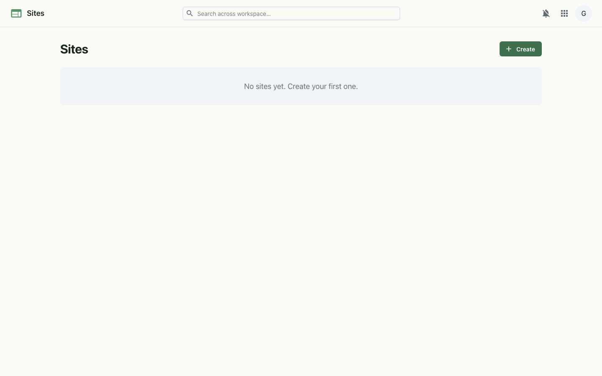

Build and publish simple websites from your workspace — a block-based editor, multiple pages, and a public link when you're ready.
Sites is a lightweight website builder. Stack content blocks — headings, text, images, buttons, dividers and embeds — onto pages, add as many pages as you need, and preview as you go. Keep a site as a private draft while you work, then publish it to share a clean public page. No code, no separate hosting.

Each site's page tree is serialized to JSON and stored in the platform database. The editor renders that model in the browser and saves it back as you work. Publishing flips the site's published flag and exposes it through an unauthenticated public endpoint, so a published site renders for visitors who aren't signed in.